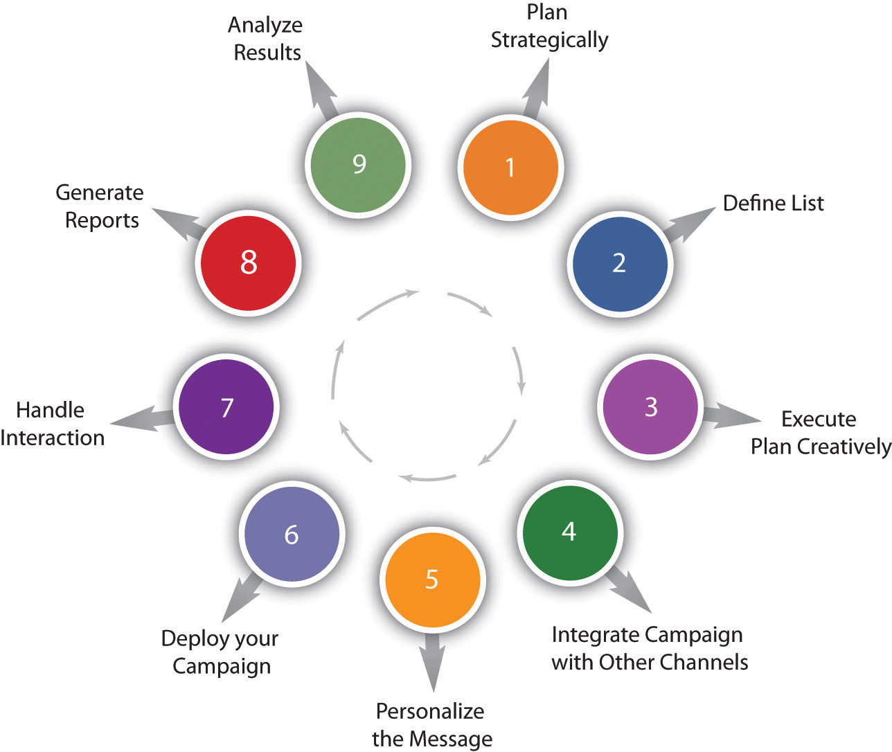
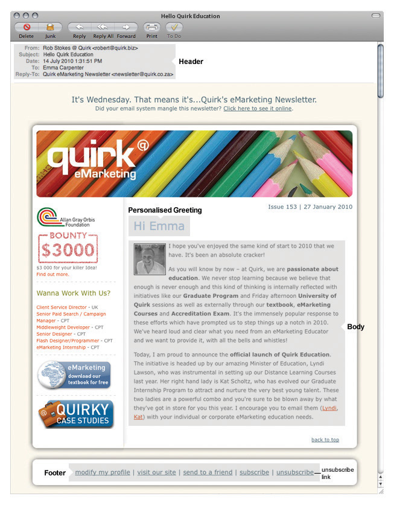

At its core, e-mail marketing is a tool for customer relationship management (CRM). Used effectively, this extension of permission-based marketing can deliver one of the highest returns on investment (ROI) of any eMarketing activity. Simply put, e-mail marketing is a form of direct marketing that utilizes electronic means to deliver commercial messages to an audience. It is one of the oldest and yet still one of the most powerful of all eMarketing tactics. The power comes from the fact that it is the following:
Furthermore, e-mail marketing’s main strength is that it takes advantage of a customer’s most prolific touch point with the Internet: their in-box. E-mail marketing is a tool for building relationships with both existing and potential customers. It should maximize the retention and value of these customers, which should ultimately lead to greater profitability.
E-mail is probably ubiquitous to you, but there was a time when there was no e-mail!
E-mail actually predates the Internet and was first used way back in 1961 as a way for users of the same computer to leave messages for each other. Ray Tomlinson is credited with creating the first network e-mail application in 1971. He initiated the use of the “@” sign and the address structure that we use today (username@hostname).Dave Crocker, “Email History,” http://www.livingInternet.com/e/ei.htm (accessed March 18, 2008). E-mail was used to send messages to computers on the same network and is still used for this purpose today.
It was only in 1993 that large network service providers, such as America Online and Delphi, started to connect their proprietary e-mail systems to the Internet. This began the large-scale adoption of Internet e-mail as a global standard. Coupled with standards that had been created in the preceding twenty years, the Internet allowed users on different networks to send each other messages.
The first e-mail spamE-mail sent to someone who has not requested to receive it—evil! dates back to 1978. Spam is defined as unsolicited commercial or bulk e-mail. In fact, more than 97 percent of all e-mails sent over the Net are spam!Darren Waters, “Spam Overwhelms E-mail Messages,” BBC News, April 8, 2009, http://news.bbc.co.uk/2/hi/technology/7988579.stm (accessed May 7, 2010).
Direct marketing has long played an integral part in marketing campaigns, but the high cost meant that only large companies were able to pursue it. However, with the growth of the Internet, and the use of e-mail to market directly to consumers, marketers have found these costs dropping and the effectiveness increasing.
If you consider marketing as communicating with current and potential customers, you will see that every e-mail that is sent from your organization should be considered as part of your holistic e-mail marketing strategy. Does that sound a little complicated? Consider an online retailer, http://www.zappos.com. Zappos is an online shoe retailer. What are the ways that, as a customer, you might receive e-mails from Zappos?
The following are examples of other e-mails sent by Zappos:
All the communication sent out can be used to convey your marketing message. Every touch point will market the organization. However, here we will focus on commercial e-mails.
There are two types of commercial e-mails:
As with all eMarketing activities, careful planning is called for, as is careful testing and evaluating, so as to optimize your revenue. E-mail marketing may be highly cost effective, but the cost of getting it wrong can be very high indeed.
There are nine steps to executing an e-mail campaign properly. These nine steps should be considered best practices for e-mail campaigns. If followed closely, a marketer can expect great results.
The nine steps are as follows and will be addressed in the following subsections:
Figure 2.1 Steps to Executing an E-mail Campaign
The first part of any e-mail campaign should involve planning around the goals you want to achieve. These will probably be in line with the goals of your Web site, with e-mail marketing being used as a tool to help you achieve those goals. As discussed in Chapter 15 "Web Analytics and Conversion Optimization", you will decide on the key performance indicators (KPIs)Also known as key success indicators (KSIs), these help an organization define and measure progress toward organizational goals. for your campaign as well. Promotional e-mails will usually have an immediate goal:
Newsletters tend to focus on longer-term goals, and so your KPIs become more important here. KPIs include the following:
ROI can be a goal of the campaign, and it can be used as a KPI.
A successful e-mail campaign is most likely to be the one geared at retaining and creating a long-term relationship with the reader.
Know your audience; they will dictate the interactions. For more information on writing for your audience, please refer to Chapter 14 "Online Copywriting".
Running a successful e-mail campaign requires that a business has a genuine opt-inPermission given for e-mails to be sent to you. database. This database, the list of subscribers who have agreed to allow a company to send them e-mails with marketing messages, is the most valuable asset of an e-mail campaign.
Permission must be explicitly given by all people to whom e-mails are sent. Companies that abuse this can put their reputation in jeopardy, and in some countries, legal action can be taken against companies that send unsolicited bulk e-mail—spam.
Growing this database, while keeping it targeted, is a key factor in any e-mail campaign. The database needs only one entry—the prospect’s e-mail—but the following should also be considered:
Fields such as name, surname, and title should be separated in your database. You should also gather date of birth as opposed to a prospect’s age—it ensures your database can stay up to date.
Don Pepper and Martha Rogers refer to gathering information over a period of time as “drip irrigation,” since it neither overwhelms nor parches the prospect.Don Peppers and Martha Rogers, Managing Customer Relationships: A Strategic Framework (Hoboken, NJ: Wiley, 2004).
However, don’t be tempted to ask for more information than is required. The more information marketers can gather, the better they can customize their marketing messages. However, the more information a prospect is required to give, the more apprehensive he will be about parting with these details. This is in part because of the hassle involved and in part as a result of fear around Internet fraud. Following the initial sign-up, further information can be requested over a period of time.
There are a myriad of ways to attract prospects to opt in to a database. An e-mail sign-up form on a company Web site is key. Visitors to a Web site have already expressed an interest in a company by clicking through to the Web site—this is an opportunity to develop that interest further.
The best practice for sign-up forms is as follows:
Every interaction can be used to ask permission to send e-mails.
Opt-in and double opt-in: the integrity of the database can be safeguarded with a double opt-in process. An e-mail is sent to the e-mail address supplied, and the user has to click on a link within that e-mail to confirm their subscription. This means that dud e-mail addresses are kept out of the database and confirms that the user has granted explicit permission.
E-mails can be created and viewed as hypertext markup language (HTML) e-mailsHTML e-mails usually contain graphics and can be interactive. or as text e-mailsText e-mails or plain text e-mails do not contain graphics or any kind of markup.. Bear in mind, though, that sometimes HTML e-mails are rendered as text e-mails.
Text e-mails are the plain ones—text only, as the name suggests. If you have a Windows computer and you open up Notepad and type there, then you will be creating a text file. These e-mails are smaller and plainer. While copy is always important, it is particularly critical in this case, as it is the key driver of action and interaction.
HTML e-mails are the e-mails with all the bells and whistles. These e-mails can contain images, different fonts, and hyperlinks. It’s probably what you’ve had in mind throughout this chapter when we have referred to e-mail marketing.
There are six main parts of an e-mail.
HeaderHas the “to,” “from,” and “reply to” fields in an e-mail.. This has the “to,” “from,” and “reply to” fields. These are also opportunities to build a relationship through creating a perception of familiarity. In other words, the reader needs to perceive that the newsletter is somewhat unique for them and sent personally by the publisher. Using a personalized company e-mail address (e.g., trevor@companyname.com) for the “reply” field creates familiarity and builds trust with the reader. The “from” address should also include the organization’s name. A meaningless “from” address that the reader cannot identify only serves to confuse the origin of the newsletter and spark apprehension.
Subject lineAids the reader in identifying the e-mail and also entice the reader to open it.. The subject line could be considered the most important part of an e-mail. Subject lines aid the reader in identifying the e-mail and also entice the reader to open it. The subject line is also scrutinized by spam filters and so should avoid words like “free,” “win,” and “buy now.” Consistent subject lines, using the name of the company and the newsletter edition, can build familiarity and help readers to sort their in-box. As with everything online, testing different subject lines will lead marketers to the formula that works for them.
Personalized greetingA greeting that is specific to the user.. With a database that has entries for readers’ names, it is possible to personalize the greeting of the e-mail. “Hi, Kim Morgan” can elicit far better responses than “Dear Valued Customer,” but it is possible to create a greeting with personality without personalizing it. Occasionally, the subject line can be personalized as well to boost responses.
BodyWhere the content of the e-mail goes.. This is where the content of the e-mail goes. Don’t be tempted to use too many images: it can increase the size of the e-mail, and it can obscure text when images do not load. Be sure that text is not on the image but rather can be read without an image being loaded. Readers want value, so where images are used, make sure they are relevant and not just space fillers.
FooterAppears at the bottom of the e-mail and may include content such as contact information and the unsubscribe link.. A standard footer for e-mails helps to build consistency, and is the customary place to keep the contact details of the company sending the e-mail. At the very least, this should include the name and contact e-mail of the company. It can also include the privacy policy of the sender. One way to grow the e-mail list is add a “forward to a friend” link in the footer. The most important part of the footer is a clear unsubscribe link.
Unsubscribe linkThe link that allows users to remove themselves from an e-mail they no longer wish to receive. Required element for all e-mails.. It is mandatory to have an unsubscribe link on all commercial e-mails. Interactive e-mails are best constructed with lightweight HTML capability allowing the e-mail to open quickly. This helps to capture the user’s attention before she moves on. The structure must allow readers to scan and navigate the e-mail easily. For more on usability, refer to Chapter 13 "Web Site Development and Design". The length of paragraphs, emphasis through bolding and colors, as well as sectioning information with bullets and borders all contribute to a well-structured e-mail.
Figure 2.2 HTML E-mail with Key Elements Shown
Relevant and valuable e-mail content is vital to ensuring the success of an e-mail marketing campaign. Valuable content is informative and should address the problems and needs of readers. It is important to realize that the reader determines the value of the content, not the publisher.
Successful e-mail campaigns provide value to their readers. This value can vary from campaign to campaign. Newsletters can offer the following:
However, avoid being marked as spam by staying away from words like “free,” “buy now,” and “discount.”
An e-mail client is the software or program that a person uses to access his or her e-mail. Some are Web based, like Gmail and Hotmail, but there are also plenty of software-based e-mail clients, like Outlook, Thunderbird, Eudora, and Lotus, to mention just a few. Theoretically, the same e-mail could look different in every single one of these, so be prepared. In addition to testing the e-mail to ensure that it will pass spam filters, the design should be tested to ensure that it renders clearly in as many e-mail clients as possible. Make sure that images line up, that copy is clear, and that all the links work.
E-mails can be tested for platform compatibility at http://litmusapp.com. An e-mail’s spam score can be checked at http://spamassassin.apache.org.
While e-mail marketing can operate as a stand-alone marketing campaign, integrating it with other channels, both online and offline, will serve to both reinforce a brand’s message and increase responses.
There should never be a disparity between the content, tone, or design of an e-mail when compared to the rest of a company’s offerings. In-store promotions can be reinforced and promoted to an e-mail database, or Web site information can be summarized for e-mail.
Custom landing pages, as required, should be created for any promotions being communicated in an e-mail communication.
The technology of e-mail marketing allows for mass customization—it is one-to-one marketing on a macro scale. Even simple personalization can see improved results.
Customization starts at using the recipient’s name and sending either HTML or text e-mails based on preference, to sophisticated measurement of a recipient’s preferences and tailoring content to suit them.
Segmenting a database can allow for customization across demographics or purchase history. Being able to reconcile browsing activity to an e-mail recipient can give further opportunities for customization.
By creating valuable content, establishing the correct frequency, and testing an e-mail for display and deliverability, an e-mail marketer should be able to ensure an excellent delivery rate. Consistency in deploying newsletters also aids in fostering trust and fulfilling expectation. E-mails should be delivered at consistent times, but the optimum time for best results should be tested.
E-mail reputation can determine whether or not your message is regarded as spam. It is determined by the general opinion of the Internet service providers (ISPs)The company that is providing you with access to the Internet (e.g., MWEB, AOL, and Yahoo!)., the antispam community, and the recipients of an e-mail. It can relate to a sender’s Internet protocol (IP) addressAn exclusive number that is used to represent every single computer in a network., sending domain, or both. This means that if someone sends e-mail using the same server that you use, you could be damaged if they spam. This opinion is a reputation score created by an ISP or a third-party provider. If the sender’s score falls within the ISP’s thresholds, a sender’s messages will be delivered to the in-box. If not, the sender’s e-mails may arrive in the bulk folder, be quarantined, or be bounced back to the sender.
Becoming an effective e-mail marketer requires constant list cleansing and hygiene. In fact, most lists shrink by 15 percent each year due to subscribers changing e-mail addresses. Make sure you are diligent about maintaining a current opt-in list to achieve maximum deliverability via reputation.
Tips to help a reputation score include the following:
An e-mail white list is a list of contacts that the user deems are acceptable to receive e-mail from and should not be sent to the trash folder.
When should you send e-mails? Common sense tells you not on Monday morning or Friday afternoon, but it varies by audience. Testing will guide you.
When is e-mail an e-mail, and when is it spam? Spam is unsolicited bulk e-mail—it means that the recipient never gave permission to be sent that e-mail.
If the recipient has given permission to be sent marketing messages by e-mail, then it is not spam. Users give permission when they check a box that says, “Yes, please send me offers from your company by e-mail.” The e-mail address can only be provided to another company if the user ticks a box that says, “Yes, please send me offers from third parties selected by you by e-mail.”
Permission must be explicitly given to the company to be allowed to market to that user. Trying to gain explicit permission in a sneaky way will only annoy your users and might result in your e-mails being marked as spam, which subsequently damages your reputation.
As well as the e-mails strategically planned as part of a campaign (promotional e-mails and newsletters), every interaction via e-mail should be considered as part of a company’s e-mail marketing practice. Automated e-mails, such as order confirmations and even out of office replies, are all opportunities to engage with customers. If a company has a particular tone or content style, this must be reinforced in these interactions. These e-mails can also be an opportunity to cross-advertise other promotions that a company is offering.
As with all things eMarketing, tracking, analyzing, and optimizing is key to growth. E-mail tracking systems produce statistics in a user-friendly manner.
The following are key measurables for understanding the performance of e-mail campaigns:
Open rate does not necessarily indicate whether or not an e-mail has been read. How do you think a marketer can determine if e-mails are being read?
Once the reports have been generated, it is time to work out what the numbers are revealing and to use this information to improve the next e-mail sent out.
With e-mail marketing, split testing across a host of factors will enable campaign optimization. The following are some factors to test:
First, an e-mail campaign needs a database. A plan for growing this database needs to be put in place. Most e-mail service providers will also provide tools for managing this database.
All e-mails need to be tested for e-mail client compatibility as well as for any potential spam problems. E-mail client compatibility can be reviewed at http://www.litmusapp.com, and an e-mail’s spam score can be checked at http://spamassassin.apache.org.
Once an e-mail has been sent, results need to be analyzed to pinpoint areas for growth for the next campaign.
Mark Brownlow, “Email Promotions vs Newsletters,” Email Marketing Reports, http://www.email-marketing-reports.com/newsletterspromotions.htm (accessed March 18, 2008).
Spencer Kollas, “2 Email Strategies Most Marketers Forget,” iMedia Connection, February 18, 2008, http://www.imediaconnection.com/content/18346.asp (accessed March 18, 2008).
Véro S. Pepperrell, “The Seven Deadly Sins of Email Marketing Management,” Digital Web Magazine, March 27, 2007, http://www.digital-web.com/articles/seven_sins_of_email_marketing (accessed March 18, 2008).
Brad Templeton, “Origin of the Term ‘Spam’ to Mean Net Abuse,” Brad Templeton's Home Page, http://www.templetons.com/brad/spamterm.html (accessed March 18, 2008).